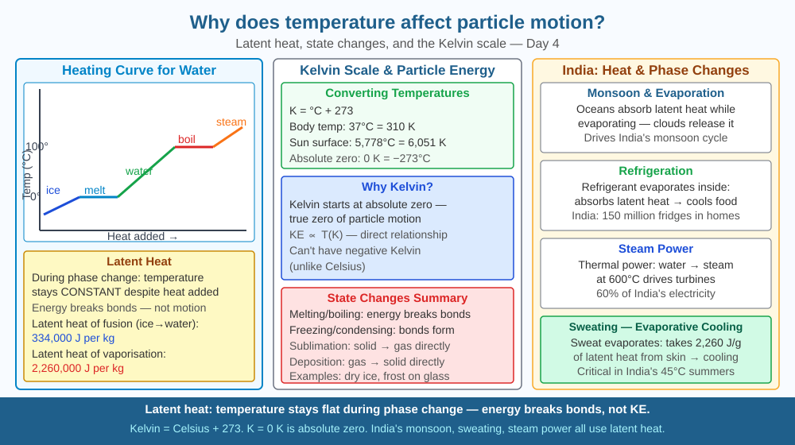

By the end of this lesson, you should be able to explain the relationship between temperature and kinetic energy, describe how heating drives state changes, and predict what happens when a gas is cooled significantly.
Ice melts at exactly 0°C. Water boils at exactly 100°C (at sea level). Why do these transitions happen at specific temperatures, and why does the temperature stay constant while something is melting even if you keep heating it?
Temperature and kinetic energy: Temperature (in Kelvin) is directly proportional to the average kinetic energy of particles. T ∝ KE_average. Doubling temperature (in Kelvin) doubles average kinetic energy.
Kinetic energy: KE = ½mv². Lighter particles (like H₂) move faster than heavier ones (like O₂) at the same temperature.
State changes and latent heat: - When ice is heated toward 0°C, KE increases, particles vibrate more vigorously. - At 0°C, added energy breaks intermolecular bonds (not increases KE) → temperature stays constant while ice melts. This energy = latent heat of fusion (334 kJ/kg for water). - At 100°C, latent heat of vaporisation (2,260 kJ/kg) breaks remaining liquid bonds → all energy goes into freeing gas particles, temperature stays at 100°C until all water has evaporated.
Kelvin scale: K = °C + 273. Absolute zero (0 K = −273°C) is where kinetic energy reaches its theoretical minimum. There is no negative temperature on the Kelvin scale.
Temperature is like the speed setting on a blender. Turn the dial up — the blades spin faster, the contents churn more violently. That "violence" is kinetic energy. Now imagine the blender is full of ice cubes instead of liquid. At a low setting (below 0°C), the cubes just rattle around but stay solid. As you increase the dial past a critical setting (0°C), the ice does not instantly zoom into fast liquid motion — instead, all incoming energy goes into breaking the interlocking ice structure, not speeding up the particles. The dial reading (temperature) stays flat on the thermometer even though you're pouring in energy. This flat line is the latent heat plateau.
Once all the ice is broken apart into liquid, the temperature rises again with additional energy. Then, at the next critical setting (100°C), the same thing happens: all energy goes into breaking the hydrogen bonds that hold water molecules together in liquid, and the temperature holds flat again until every molecule has escaped as vapour.
The critical insight: temperature measures particle kinetic energy, but during a state change, energy goes into breaking bonds rather than increasing speed. This is why a boiling kettle never exceeds 100°C no matter how hard it boils.
The SVG diagram is a heating curve for water: a graph with time on the x-axis and temperature (°C) on the y-axis. The curve starts at −20°C (solid ice), slopes upward as ice is heated, then goes flat at 0°C for a labelled horizontal plateau marked "Melting — latent heat of fusion (334 kJ/kg), temperature constant." The curve then slopes upward again through the liquid phase, flattens again at 100°C for a wider plateau labelled "Boiling — latent heat of vaporisation (2,260 kJ/kg), temperature constant," then slopes up again as steam is superheated. Each segment is colour-coded: blue for solid, blue-green for liquid, red for gas. Particle diagrams alongside each segment show vibrating fixed-position particles (solid), sliding particles (liquid), and free-flying particles (gas). Arrows on the two plateaus are labelled "energy goes into breaking bonds, not speeding particles."

India's massive steel industry (JSW Bellary, TATA Jamshedpur) heats iron to >1,538°C (iron's melting point). Precise temperature control is critical — too cool and the iron doesn't flow into moulds, too hot and impurities cause defects. Blast furnaces in India run at 1,900°C. The Indian cooking tradition of the pressure cooker (used in 80% of Indian kitchens) raises boiling point to ~120°C by increasing pressure — latent heat is still absorbed at that temperature, but food cooks faster because of the higher temperature. Power plants at NTPC stations boil water to produce steam that drives turbines — engineers must account for the enormous latent heat of vaporisation (2,260 kJ/kg) when calculating how much fuel is needed to convert water to steam.
Boil water and measure its temperature every 30 seconds while it's boiling vigorously. Despite continuous heating, the thermometer stays at 100°C. This demonstrates latent heat: energy input goes into breaking intermolecular bonds, not raising temperature. Compare: when you add ice to room-temperature water, the water cools — the ice absorbs 334 J per gram as latent heat of fusion before it melts.
Now try this additional step: measure the time it takes for 500 mL of water to reach 100°C from 25°C. Then measure how long it stays at 100°C as you continue heating until all the water has evaporated (or a large portion of it). The evaporation phase takes far longer per degree of "progress" than the heating phase — a direct experience of how much larger the latent heat of vaporisation (2,260 kJ/kg) is compared to the heat needed just to raise temperature.
At very high temperatures, atoms can lose their electrons entirely, forming plasma — the fourth state of matter. The Sun (core temperature 15 million K) consists entirely of plasma. India's Institute for Plasma Research (IPR, Gandhinagar) works on controlled nuclear fusion in a tokamak (ADITYA-U) that must heat hydrogen plasma to 100 million degrees — hotter than the Sun's core. If achieved, fusion could provide limitless clean energy. This is the cutting edge of temperature physics.
At the opposite extreme, cooling atoms to within billionths of a degree of absolute zero produces a Bose-Einstein condensate — a fifth state of matter first created in 1995. In this state, thousands of atoms merge into a single quantum state and behave as one entity, moving in perfect synchrony. The particles don't slow their motion in any familiar sense — instead, their quantum wave functions overlap and merge. This shows that the simple "slower = colder" picture breaks down completely at extreme temperatures.
Predict: A pressure cooker builds up steam pressure inside a sealed pot, raising the boiling point of water to 120°C. If you open the pressure cooker while it is still pressurised, what would happen to the water inside? Use what you know about boiling points and pressure to explain why this is a safety hazard.
What is the relationship between temperature and the kinetic energy of particles?
Correct answer: B
Why is identifying the mechanism linking temperature and particle motion important?
Correct answer: B
If a gas were cooled significantly, what change in particle motion would you predict?
Correct answer: B
A student is cooking rice on a mountain at an altitude of 3,500 metres (like Leh, Ladakh), where atmospheric pressure is about 65 kPa instead of the standard 101 kPa at sea level.
Use your understanding of boiling point and latent heat to answer: (a) Will water boil at a higher or lower temperature than 100°C at this altitude, and why? (b) The rice needs to reach 98°C inside each grain to cook properly. Will open-pot boiling at this altitude cook the rice adequately? (c) How would using a pressure cooker solve the problem, and what physical mechanism makes it work? Refer to particle kinetic energy and intermolecular forces in your answer.
Water's latent heat of vaporisation (2,260 kJ/kg) is extraordinarily high compared to most liquids — nearly seven times higher than ethanol, for instance. This single property is why sweating cools the human body so effectively: evaporating just 1 gram of sweat removes 2,260 joules from your skin. It is also why coastal cities like Mumbai have more moderate climates than inland cities at similar latitudes — the ocean's vast water surface absorbs and releases heat through evaporation and condensation, buffering temperature swings. India's monsoon is powered by the same mechanism: the Arabian Sea evaporates enormous quantities of water (absorbing latent heat), which condenses over land (releasing that heat), driving the convective system that delivers 70% of India's annual rainfall.
Temperature measures the average kinetic energy of particles — but during a state change, added energy breaks intermolecular bonds rather than speeding up particles, which is why temperature holds constant at 0°C and 100°C no matter how hard you keep heating.